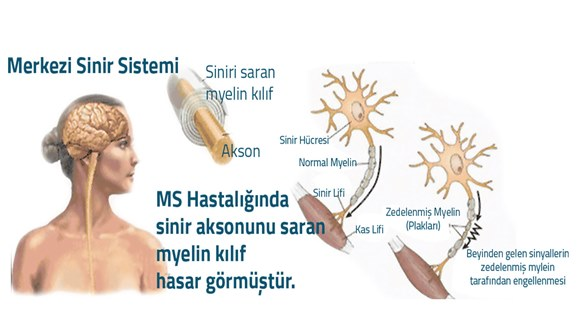
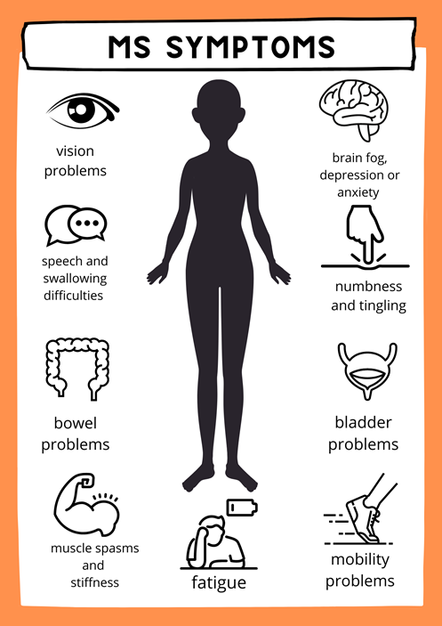

MS Hastalığı (Multipl Skleroz) Nedir?
Multipl Skleroz (MS) hastalığı, etkisini merkezi sinir sisteminde gösteren ve ataklarla kendini belli eden kronik sinir sistemi hastalığıdır. Merkezi sinir sistemi beyin, beyincik, beyin sapı ve omurilikten oluşur. Bu hastalığın adı beynin birden çok yerinde görülmesinden dolayı çoklu yani multiple, hasar gören dokularında sertleşmesinden dolayı sklerozdan gelmektedir.
MS (Multipl Skleroz) hastalığı, kişinin bağışıklık sistemindeki bozukluk sonucu beyin ve omurilikte çok sayıda plakların oluşmasıyla ortaya çıkan bir hastalıktır. Multipl Skleroz hastalığı genellikle 20- 40 yaş arasında görülüyor. Genç yaşlarda görülebilen MS (Multipl Skleroz) hastalığı, dünyada yaklaşık 3 milyon, Türkiye’de ise 35 bin kişiyi etkilemektedir. MS hastalığı ataklar halinde gelişir ve ancak uygun tedavi ve düzenli takiple kontrol altında tutulabilmektedir.
Bağışıklık sistemi vücudu dışarıya karşı korurken kendi hücrelerini tanır. Ancak bilinmeyen nedenden dolayı sistem bozulduğunda, bağışıklık sistemi kendi hücrelerine özellikle de sinir iletimini sağlayan beyin ve omurilikteki hücrelere karşı saldırı düzenler.
MS (Multiple Skleroz) beyinde ve omurilikte, mesajları taşıyan sinir telleri etrafındaki koruyucu kılıfın (miyelin kılıfı) hastalığıdır. Merkezi sinir sistemi ile organların bilgi iletişimini sağlayan omuriliğin miyelin tabakası üzerindeki fiziksel tahribatın bir sonucu olarak ortaya çıkmaktadır. Kılıfın hasar gördüğü yerlerde sertleşmiş dokular (skleroz) yer almaktadır. Bu sertleşmiş alana da plak denir. Bu plaklar, sinir sistemi içinde pek çok yerde oluşabilir ve sinirler boyunca mesajların iletilmesini engelleyebilir. Bunun sonucunda yürüme, konuşma, görme gibi eylemlerde bozulmalar olabilir, bunlara MS atakları denir.
Ancak miyelin tabakası kendini tekrar yeniler ve hastalar günlük yaşamına geri döner. Ataklar 1 hafta, 3 ay, 1 yıl gibi farklı zamanlarda olabilir. Her MS hastası için atak süreleri farklıdır. Günümüzde ilaçlar, fizik tedavi ve diğer yöntemlerle ataklar önlenebilmekte, sayısı ve şiddeti azaltılabilmektedir.
MS hayatı tehdit eden bir hastalık değildir. Bazı hastalarda ileriki yaşlarda hareket ve bazı bilişsel kayıplara rastlanabilir. Hastalığın kesin tedavisi olmasa da günümüzde tıptaki gelişmeler, erken tanı ve doktor kontrolünde alınacak önlemler, yaşanan sıkıntıları azaltmaktadır.
MS hastalığı (Multiple Skleroz) nedenleri nelerdir?
Bu konuda pek çok farklı teoriler olmasına rağmen MS'in nedeni henüz kesin olarak tespit edilebilmiş değildir. Yapılan değişik araştırmalarda hastalığa neden olabilecek çok çeşitli nedenler (daha önce geçirilmiş virütik enfeksiyonlar, çevreden kaynaklanan bazı zehirli maddeler, beslenme alışkanlıkları, coğrafi etmenler, vücudun savunma sistemindeki bozukluklar) sorgulanmışsa da hiç biri kesin neden olarak saptanamamıştır.
Bazı araştırmacılar, MS'e henüz belirlenemeyen bir virüsün neden olduğunu ileri sürmektedirler. Bu teoriye göre, çocuklukta veya gençlik döneminde vücuda giren bu virüs; beş, on ya da on beş yıl gibi bir süre hiçbir belirti göstermeden vücutta kalmakta, daha sonra yine bilinmeyen bir nedenle, örneğin şiddetli bir üst solunum yolu hastalığı sırasında ortaya çıkmaktadır.
Diğer bir grup bilim adamı ise, oto-immün ( vücudun kendi bağışıklık sisteminin neden olduğu) bir hastalık olduğunu düşünmektedirler. Bu teoriye göre; vücudun bağışıklık sistemi normal olarak, vücuda giren yabancı mikrop ya da viruslara karşı vücudu korumak için karşı saldırıya geçip onlarla mücadele etmesi gerekirken, MS'li kişilerde bilinmeyen bir nedenle, merkezi sinir sistemindeki sinirlerin miyelin kılıfına saldırıp onları tahrip etmektedir.
Multipl Skleroz'un oluşumunda çevresel etkenler (iklim, yaşanan bölge vb.) ve geçirilmiş viral enfeksiyonların yanı sıra, genetik yatkınlık da önemli rol oynuyor. Ms Hastalığı, genetik ve çevresel nedenlerin bir araya gelmesi sonucunda da meydana gelebilir.
MS hastalığı (Multiple Skleroz) belirtileri nelerdir?
Hastalığın ilk belirtileri birkaç gün içinde ortaya çıkar; alevlenmeler ve düzelmelerle seyreder. Başlangıç dönemlerinde tam bir düzelme gösterirken, az sayıda hastada baştan itibaren düzelmeler olmaksızın kötüleşme söz konusu olabilir.
MS belirtileri, şiddet ve seyir yönünden hastadan hastaya çok büyük değişiklikler gösterebilir.
Bazı hastalarda değişik hastalık tabloları arka arkaya ortaya çıkar, daha sonra tam ya da kısmi iyileşme görülür. Belirtiler etkilenen sinir sistemi bölgesine göre farklıdır.
Bunlar;
- Yorgunluk: MS Hastalığı - Multiple Skleroz’lu hastaların % 80'inde ciddi yorgunluk vardır.
- Vücudun değişik bölgelerinde özellikle gövdede, yüzde, kollar ya da bacaklarda uyuşukluk, karıncalanma, güçsüzlük
- Yürüme güçlüğü: Zayıflık, denge kaybı ve spastisite yürüme güçlüğüne neden olabilir.
- Dilde peltekleşme gibi konuşma bozuklukları
- Mesane ve bağırsak problemleri
- Başdönmesi: Sıklıkla baş dönmesi veya dengesizlik yakınmasına neden olabilir.
- Görme problemleri: Bulanık görme, kontrast görmede bozulma ve ağrılı göz hareketi birçok MS hastası için erken belirtilerdendir.
- Düşünme, bellek ya da konsantrasyonda zorluk yaşama. Tüm MS Hastalığı - Multiple Skleroz hastalarının yaklaşık yarısı, bilgi edinme, işleme veya hatırlama yeteneği dahil olmak üzere bilişsel değişiklikler yaşar.
- Depresyon
- Ağrı: MS Hastalığı - Multiple Skleroz’lu tüm hastaların yarısından fazlasında genellikle kronik ağrı yakınması vardır
MS’de yorgunluk, halsizlik, uyuşmalar ve vücutta elektriklenmeler gibi belirtiler gün içinde aralıklarla gelişebileceği gibi günlerce, haftalarca da sürebilir.
MS belirtileri, rahatsızlığın erken evrelerinde geçici ataklar şeklinde ortaya çıkarken, tedavide geç kalındığında ilerleyen yıllarda görme kaybı, denge ya da yürüme bozukluğu ve peltek konuşma gibi bazı belirtiler kalıcı olarak yerleşebilir.
Bu nedenle MS belirtilerini iyi tanımak ve zamanında hekime başvurmak çok önemlidir. Ayrıca ataklar geçtiğinde “nasıl olsa düzeldim” düşüncesiyle tedaviyi kesinlikle bırakmamak gerekiyor.
Ancak bu belirtiler kişide MS olduğu ve atak geçirdiği anlamına gelmiyor. Kişide daha önce olmayan bir nörolojik bulgunun varlığı, 24 saatten fazla sürmesi ve kötüleşmesi atak varlığına işaret eder. Bu durumda kişinin doktora başvurması gerekiyor.
MS Hastalığı Nasıl Teşhis Edilir?
MS’de nörolojik muayene, elektrofizyolojik (sinir iletimini ölçen testler), beyin omurilik sıvısı incelemesi ve MR yardımı ile tanı konur.
MS’in tanısında hastada ortaya çıkan belirtilerin doktora çok iyi anlatılması gerekir. Ayrıntılı öykü almak ve detaylı bir nörolojik muayene yapmak en önemli kural olarak kabul edilir.
Bu konuda deneyimli bir doktor, ayrıntılı öykü ve muayene ile klinik olarak MS’in ön tanısını koyabilir.
Tanıyı kesinleştirmede diğer önemli kural ise MS ile karışabilecek diğer hastalıkların dışlanmasıdır. Bu nedenle beyin ve omuriliğin MR görüntüleme ile değerlendirilmesi önem taşır. Kimi hastalarda kesin tanı için beyin omurilik sıvısının incelenmesi, kan testleri ve elektrofizyolojik çalışmalar da gerekebilir.
MS hastalığı (Multiple Skleroz) kimlerde görünür?
Öncelikle Multiple Skleroz(MS) ölümcül bir hastalık değildir. Bu konuda yapılmış pek çok çalışma vardır. Bu çalışmalarda ortalama yaşam süresi açısından MS'lilerle sağlıklı bireyler arasında önemli bir fark olmadığı ortaya konmuştur. MS'de bulaşıcılık söz konusu değildir.
Multiple Skleroz (MS) genç insanlarda nörolojik nedenli engelliliklerde birinci sırayı almaktadır. Hastalık genellikle gençlerde, kadınlarda, sosyo-ekonomik düzeyi yüksek toplumlarda, kentlerde yaşayan eğitim düzeyi yüksek kişilerde görülen bir hastalıktır.
MS'li kişilerin, tedavi için aldıkları bazı ilaçların etkisiyle enfeksiyon hastalıklarına karşı direnme güçleri azalır. Bu nedenle hastaların solunum yolları enfeksiyonları, idrar yolu enfeksiyonları gibi hastalıklara diğer insanlardan daha fazla yakalanma eğilimleri vardır.
MS, bir akıl ya da ruh hastalığı olmayıp, tıbbi olarak tamamen bir sinir sistemi hastalığıdır.
MS kalıtsal bir hastalık değildir. Ailelerinde MS bulunan kişilerin MS'e yakalanma eğilimi az da olsa vardır.
MS hastalığı (Multiple Skleroz) en çok hangi yaşlarda ortaya çıkar?
Hastaların yaklaşık 2/3'ünde ilk belirtiler, 20-40 yaşlar arasında ortaya çıkar ancak 10 yaş gibi erken başlangıçlı hastalar ve 40 yaşından sonra başlayan vakalar da vardır. Kadın-erkek dağılımı açısından kadınlarda 2/3 kat daha sıktır.
MS Hastalığı (Multipl Skleroz) Tedavisi
MS’in temel olarak 3 tip tedavisi var; belirtilere yönelik tedavi, atak tedavisi ve atakları önleme tedavisi.
Bağışıklık sistemini düzenleyen, baskılayan ve/veya atak sırasında uygulanan bu tedaviler MS hastalarına yardımcı oluyor.
Bugün hem MS hastalığının daha kötüye gitmesine engel olacak, hem de alevlenmeleri yatıştıracak birçok ilaç tedavide kullanılıyor. Bununla birlikte, fizik tedavi gibi farklı rehabilitasyon türleri de kişinin ev ve iş hayatında yardımcı olabiliyor.
Bunun sonucunda hastaların atak döneminde yaşadıkları görme bozukluğu, konuşma güçlüğü, denge sağlama ve idrar tutamama gibi nörolojik bulgulara bağlı sıkıntılardan az etkileniyor. Ayrıca hastaların atak nedeniyle sık aralarla yüksek doz kortizon almaktan kurtulmaları yaşam kaliteleri açısından oldukça önem taşıyor.
Ayrıca erken dönemde tedavi başlanan hastalarda başta zihinsel işlevler olmak üzere yürüme ve denge gibi merkezi sinir sistemi etkilenmesine bağlı olarak özürlülüğe neden olan bozuklukların da daha geç ya da daha az geliştiği görülüyor.
Yaygın bilinen aksine hastalığın cinsel isteği etkileme ihtimali bulunuyor ve bu durumda ilaç ve terapi yoluna gidilebiliyor. Ancak olası cinsel sorunlara karşın MS hastalığı çocuk sahibi olabilme yeteneğini etkilemiyor.
Her kronik hastalıkta olduğu gibi MS’de de kişinin ve çevresinin doğru bilgilere sahip olması tedavinin etkinliği, kaliteli bir yaşam ve hastalıkla savaşacak gücü bulması için önem taşıyor. Türkiye’de MS konusunda çalışan dernekler ve farkındalık kampanyaları bulunuyor.
MS hastalığı hamileliğe engel değildir ve çocukta herhangi bir gelişim bozukluğuna neden olmaz. Hamilelik ve doğum süreci, MS hastası olmayan kadınlarla aynıdır. Hamileliğiniz planlarken doktorunuza MS hastası olduğunu söyleyerek hamileliğiniz esnasındaki tedavi sürecini doktorunuz ile düzenleyebilirsiniz.